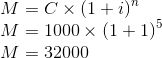
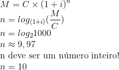

MC102 - Algoritmos e Programação de Computadores
Turmas QRSTWY
Instituto de Computação - Unicamp
Professores: Helio Pedrini e Zanoni Dias
Monitores: Andre Rodrigues Oliveira, Gustavo Rodrigues Galvão, Javier Alvaro Vargas Muñoz e Thierry Pinheiro Moreira
Lab 01a - Coding Bad
Prazo de entrega: 23/03/2015 às 13h59m59s
Peso: 1
Para ajudar sua família após sua morte, Walter White, que recentemente foi diagnosticado com câncer pulmonar nível 3, está investindo seu dinheiro em negócios ilícitos de alto risco, porém com grande retorno financeiro. O sr. White é um excelente químico e usa seus conhecimentos para a produção de metanfetamina, uma perigosa droga. Ele possui uma estimativa de quantos lotes conseguirá produzir e um valor mínimo que ele espera deixar para a família antes de sua inescapável morte.
Walter gostaria de obter duas informações.
A primeira é quanto dinheiro ele terá, se continuar reinvestindo tudo que ganha, com uma dada quantidade de lotes estimada. Para isso, ele precisará de algumas informações, que são explicadas a seguir:
- Capital inicial (C): A quantia em dinheiro que Walter tem para investir, sendo toda usada para a compra de insumos.
- Taxa de retorno (i): A droga é produzida em lotes. A taxa de retorno é aplicada a cada lote vendido. Por exemplo, no caso de uma taxa de retorno de 100%, um lote gera um valor duas vezes maior do que o gasto em insumos.
- Quantidade de lotes (n): O sr. White possui um distribuidor que compra 100% de sua produção, logo ele precisa saber quantos lotes ele deve preparar.
- Montante (M): O valor final obtido ao aplicar o dinheiro segundo os parâmetros acima.
Exemplo 1 |
|---|
|
Dados de entrada
|
C = 1000
i = 100%
n = 5 lotes
M = ?
|
|
Resultado
|

|
A segunda informação é quantos lotes (no mínimo) ele precisará produzir para conseguir um montante desejado.
Exemplo 2 |
|---|
|
Dados de entrada
|
C = 1000
i = 100%
n = ?
M = 1000000
|
|
Resultado
|

|
A tarefa deste laboratório será calcular o montante final (M), dados C, i e n, e quantos lotes (n) o sr. White precisa para obter o montante especificado (M), dados também C e i.
Entrada
Seu programa deve receber quatro números tais que:
- O primeiro é um número real positivo referente ao capital inicial (C);
- O segundo é um número real positivo referente à porcentagem da taxa de retorno (i);
- O terceiro é um número inteiro positivo referente à quantidade de lotes (n), utilizado no primeiro cálculo;
- O quarto é um número real positivo referente ao montante final desejado (M), utilizado no segundo cálculo.
Saída
Seu programa deve imprimir a saída em duas linhas:
Observações:
- O valor M especificado na saída acima deve ser representado com duas casas decimais, para tal, usar o comando printf com o parâmetro "%.2f".
- A biblioteca math.h possui uma função que calcula o logaritmo na base natural (log). Não existe uma função predefinida na biblioteca math.h que calcule o logaritmo numa dada base. No entanto, é possível calcular o logaritmo numa base qualquer
usando a seguinte propriedade de logaritmos:

- O resultado da função logaritmo é um valor real, mas o número mínimo de lotes (n) deve ser um inteiro. Sendo assim, deve ser feito um arredondamento para cima para se obter o resultado do segundo cálculo. Para tal, deve-se utilizar a função ceil, da biblioteca math.h.
Exemplos
| # | Entrada | Saída |
| 1 | 1000.00 100.00 5 1000000.00 | Montante = 32000.00
10 lote(s) |
| 2 | 500.00 200.00 6 500000.00 | Montante = 364500.00
7 lote(s) |
| 3 | 7000.00 500.00 1 3000000.00 | Montante = 42000.00
4 lote(s) |
| 4 | 1.00 100.00 10 30000.00 | Montante = 1024.00
15 lote(s) |
| 5 | 4500.00 50.00 5 50000.00 | Montante = 34171.88
6 lote(s) |